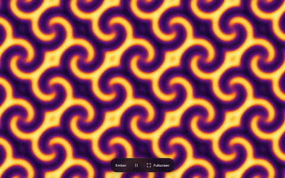
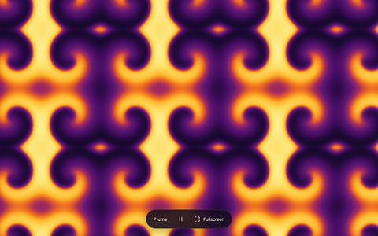
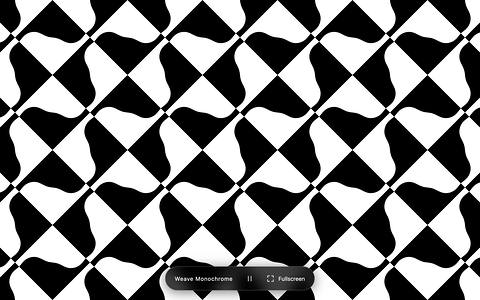
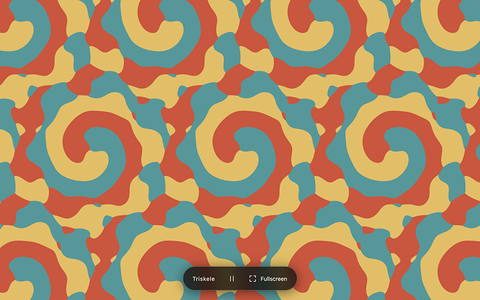
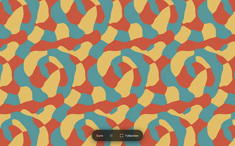
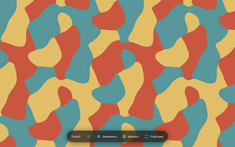
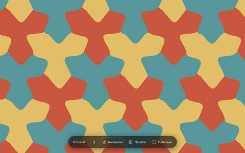
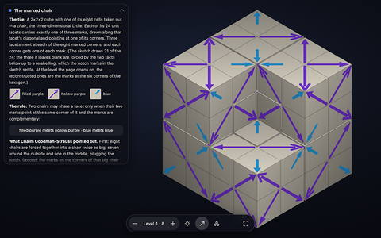
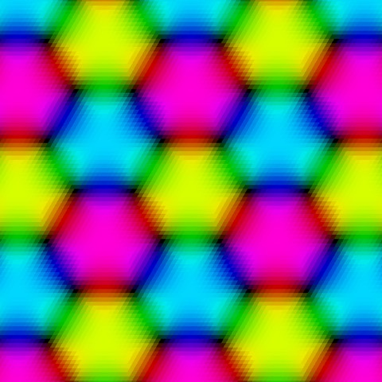
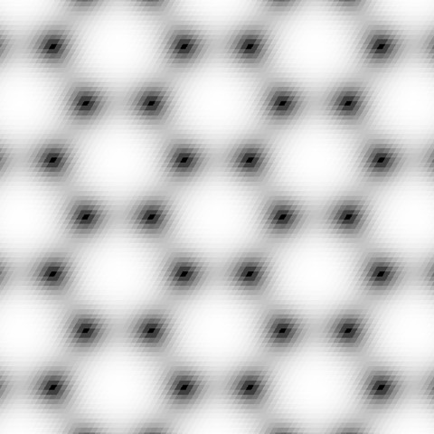

The making of animated-groups-fable
The owner typed 293 inputs on 30 days and looked at the pages on 46, an estimated 12.85 hours of reading and typing inside 45.43 hours at the keyboard. The agents were 95 main threads and 850 subagent logs, two tools on two Macs, 187.4 agent-hours. The compute was Modal: 2.398 A100-40GB-hours, all of them in one afternoon, 42.6 two-core container-hours, $10.49 metered and $0.00 billed. The artifacts were 319 commits in two repositories and 84 publications, 70 of them on this site and the addresses it deploys to and 14 on the predecessor site.
The owner's inputs appear only as summaries of at most twelve words, never their text; six short quotations of his own words mark turning points. Other people's words are never quoted — their questions appear as paraphrased fact. Browser history appears only as minutes per day and minutes per page. Eight private published spaces are counted but not named, and one predecessor page whose address carries a collaborator's given name is counted but not linked.
1. Seven weeks on one time axis#
Four tracks share one axis. Human is every typed input as a dot, the estimated reading and typing before it as a bar, the runs of inputs less than half an hour apart as shading, and the minutes spent looking at the project's own pages as a band underneath. Agents is the turn intervals of the main threads, the concurrency of the subagent logs, the Codex threads, and the stretches where commits exist and no transcript does. Compute is the hours Modal billed. Artifacts is every commit in both repositories and every publication. The axis runs from 20:17 on 9 August, when the predecessor repository was created, to 12:32 on 29 September, a few minutes past the last event any log holds: 50.7 days. The last commit of the project's own work landed at 11:32, three minutes before this report was asked for, and the counting window in §8 ends there.
On a phone, slide one finger sideways to pan and pinch with two to zoom. With a trackpad, swipe sideways with two fingers to pan and pinch to zoom; with a mouse, drag to pan, and ⌘ or Ctrl with the wheel zooms while Shift with the wheel pans. With the chart focused the arrow keys pan and +/− zoom. Tab walks into each track and the arrow keys step from mark to mark; every mark has a sentence.
2. Phases#
The work divides into 21 phases, grouped here into 12 stretches. Each card states what happened, then the three kinds of time it took. The human bar is an estimate; the agent-hours and the dollars are measured. The bars are scaled against the largest stretch, so they compare stretches with each other and not with the totals in §5.
3. The artifacts#
44 published pages, in the order they first went live, each shot from its live address on 29 September; every one answered with HTTP 200. 31 belong to this site and the three Cloudflare Workers linked from it, and 13 to the predecessor site, which is still served. Looking is the generous per-page total from the browser aggregates: minutes credited to that address, plus the minutes of its preview deployment where a viewer was mostly opened there. A dash means the page is not among the 200 most-visited project addresses. The most looked-at object of the whole project is not on this site at all: the predecessor's clockwork-colouring correspondence, 1,017.7 minutes over 2,141 navigations on 17 days.
4. What was asked#
Every input the owner typed, as a summary of at most twelve words, with the time, the tool and a category. 293 are here; 143 more were dropped as duplicates — a forked session replaying its own history, or one prompt sent to several parallel Codex threads — and 3 were off-project. The estimate after each summary is the reading and typing credited to it.
5. The totals#
Every total here is taken from the timeline. The totals are in different units, so read them side by side and do not add them: the owner's hours are estimated from what was read and typed, agent time is agent-hours (two agents busy for an hour count two), GPU time is GPU-hours, container time is container-hours, and dollars are dollars. The wall clock of the whole window, from the creation of the first repository to the last commit, is 1,215.3 hours, so the 187.4 agent-hours are about 15 % of the calendar filled by machines working in parallel.
Who did the time
The owner's row is the estimate of reading and typing; the two markers on it are the wider measures, 45.43 hours of keyboard runs and the high bound of the browser range, 112.75 hours of looking at the pages; the low bound is 63.1. Every row is split into its parts in the colours of the timeline legend above: typing then reading on the owner's row, main threads then subagents on the two Claude rows. Agent rows are turn intervals summed across parallel threads. Modal's rows are billed container-hours and GPU-hours, which are machine time, not attention.
Day by day
One row per calendar day, midnight to midnight, for the 46 days on which anything was measured. Choose a row to open that day in the timeline above. The 8 days from 8 to 15 September, with no inputs, no agent time and no commits, are the project's longest silence.
Tokens
| Measure | Claude | Codex |
|---|
6. The animations#
Every animation in the Showcase is a solution of a reaction–diffusion equation that repeats in time and carries a clockwork symmetry: a spatial operation composed with a fixed fraction of the period returns the same film. The g227 spiral lattice is the clearest case. Its group is p3 with clockwork symbol r33₁3₂: turning the picture by a third of a turn about one class of centre and waiting a third of a period reproduces it exactly, about another class it is two thirds of a period, and about the third class no wait at all (correspondence-p3.html#g227). The concentrations obey the Brusselator equations pointwise, so no frame is drawn or forced; the symmetry is a property of one orbit of the flow, and the film loops because the orbit closes.
From the question to the orbit
28 and 31 August — the question
The reaction–diffusion arm began as a prerequisite, not a plan. In an email to Vladimir Bulatov late on 28 August the owner asked whether Vladimir's differential-equation solver could be modified to produce periodic animations. Three days later, on 31 August at 10:19, he wrote out the research question itself in another email: wallpaper symmetry applied to differential equations is familiar, but could it be extended to time symmetry — a looping animation whose right half is a mirrored copy of the left, offset in time. The stated destination was a poster for the next Gathering for Gardner conference, in San Francisco. Nothing was built for four days.
4 September — Gray–Scott, one bug, and the project's only GPU afternoon
At 13:54 the owner opened a session with that same question pasted in, named clockwork symmetry 442 and its six forward-time characters, and attached two screenshots of U-skate gliders as the visual target. The first two minutes went on algebra rather than code, and it paid: time reversal is obstructed for an autonomous isotropic flow, because differentiating the reversal relation forces the orbit to be stationary; and a 442 pattern cannot be a rigidly drifting glider lattice, because a quarter turn sends the drift velocity to Rc and a common drift needs Rc = c. All six characters were shown compatible; the glider picture was excluded at the level of the group on day one.
The first solver was a space–time collocation: Crank–Nicolson defects over M frames on an N × N torus, symmetry imposed as an exact projection, minimised by L-BFGS with a hand-derived adjoint gradient. Six U-skate searches at 200 iterations each drove the residual down and held the time symmetry exactly — and every one failed independent forward closure. The defect on a coarse frame stack does not control the true trajectory.
Then the correction that shaped the whole codebase. At 14:40 the owner checked a
few of the live animations and reported that they don't seem to respect the time symmetry
,
adding that switching between g95 and g96 made no difference.
The diagnosis came two minutes later: the browser integrator had been projecting each step onto
the instantaneous kernel — the operations with zero time shift — and then drawing the requested
phase-shift generators on top. For g96 that kernel is trivial and for g95 it is a half turn, so
the two rendered identically and only the decoration changed. A time-shift character is not a
state-space constraint and cannot be imposed step by step.
The fix was to stop constraining the flow and constrain a return instead. Solve
for an initial state and a period, with the
ordinary unprojected evolution, the instantaneous kernel reducing only the unknowns, and an
analytic Hopf eigenmode as the seed. By 14:48 a rotating g96 wave had an
independent return error near ; by 14:55 both branches —
one standing, one rotating — were in hand, and the six 442 characters were populated by
translations and reflections of those two.
An earlier decision made that verification load-bearing: asked at 14:24 whether
a working animation meant one tested to move or one verified periodic, the owner chose
Only verified periodic solutions, even if the list is empty.
Modal entered at 14:47 with a smoke test for A100 reservations, and the search budget was capped at $100. Every GPU-second the project ever bought falls in the 2½ hours from 14:59 to 17:30 that afternoon: 2.398 A100-40GB-hours, $5.64 metered on the day, all of it Gray–Scott. The kernel was FP64 with fused multiply-add disabled so that GPU and CPU agreed bit for bit; on a 1,252-trajectory batched Jacobian it ran 148.9× and 149.6× faster than the same C++ integrator on one core. One prototype tried to return 66 MB of movies from the cloud and stalled after the computation had already finished; the redesign returned about 0.5 MB of initial states for 14 orbits and rebuilt the films locally, which also kept the reconstruction independent.
The triangular 632 extension the same evening cost nothing at all. Because a rotation permutes Fourier modes of equal Laplacian eigenvalue, the twisted linear flow factorises into 2 × 2 blocks; a Fourier-block preconditioned Newton–Krylov solve took 2.3 s where dense Newton on the same grid took 222 s, and 22 verified orbits covering all six 632 characters were computed locally with no cloud jobs. What did not work that evening was variety. At 16:05 the owner reported that every setting was producing the same pattern and asked for twelve to twenty per parameter set; the search delivered 8 in 442 and 11 in 632 from 309 jobs, because the symmetry reductions that made the shooting fast were also funnelling every seed into one branch family.
5 September — all seventeen wallpaper groups
Now do this for all the 17 symmetry groups
, at 21:57. Twenty-four minutes
later a commit added 405 files and 100,714 lines: a general
solver reading canonical affine operations for all 68 forward-time entries,
441 bounded CPU jobs, all returned exactly once.
The raw shooting success rate at the exploratory stage was 77 of
328 — 23.5 % — refinement to a finer grid succeeded
76 of 77, and end-to-end admission was 22.6 %.
One character resisted: a p6m mirror needed a dedicated 36-job campaign and
yielded 12 convergences of which only 5 cleared the visibility
floor, because small-amplitude mirror solutions can be mathematically correct and invisible.
The whole day's cloud bill was $0.125.
Earlier the same day the work turned outward. Video exports were cut for sharing, the session transcript was published on the site, and a research note was written explaining what had been done to the equations — nothing, as it turned out: the equations are unchanged and the additions are the two relations and , with no extra reaction term, forcing or time reversal. Vladimir's comments were relayed into the session three times that afternoon and evening. He was right about the overlays: they had repeated only three named representatives by integer cell translations, which generates the group but under-draws its rotation centres. The audit that followed checked 1,500 derived rotation-and-phase operations at 3,448 centres on every frame and node of both species, largest error , and separated the group's required centres from extra centres that only this solution has and from approximate near-periods that are never certified.
6–7 September — two more equations, and the spiral lattice
On 6 September at 16:34 the review session opened on the same unsolved complaint — insufficient diversity — with a pointer to Vladimir's Ginzburg–Landau app and a request for several equations behind the existing seventeen pages. Ginzburg–Landau turned out to be nearly free. The equation is equivariant under a global phase rotation, so a state of the form is periodic by construction and a spatial phase winding of is a time shift; the constrained subspace is flow-invariant, so plain integration inside it plus a Newton–Krylov polish to residual near gives exact spiral lattices. It covered 35 of the 51 entries with a nonzero time shift, and the 16 misses are principled: an operation that is a mirror or glide with a half-period shift forces the amplitude to vanish along a line, and those line defects are unstable, so the unprojected replay rejects them.
The Brusselator was reached through that result rather than around it. Near its Hopf point the
Brusselator reduces to a Ginzburg–Landau equation, so the job builds a matched spiral lattice on
the same mesh with a rescaled cell, lifts it through the Hopf eigenvector of the reaction
Jacobian, and closes the loop with Newton–Krylov twisted shooting —
on the unprojected flow, with among the unknowns.
The batch bruss1 launched at 11:00:48 on 7 September:
204 CPU jobs, no GPU, 81 candidates and 122
failures, 4,654.52 s of function time in total, and an actual provider charge of
$0.2007.
The orbit on this page came back from job g227-bruss-a1b23-L40-s1 after
53.75 s of function time, somewhere inside the eleven minutes from
11:00:52 to 11:11:56 — Modal records no per-job start time, so
the moment of discovery is bounded, not pinned. Its share of the bill is about
$0.0023.
It was published at 12:30 inside the review's single commit.
The recorded negative result of the same session is worth as much as the positive one: plain forward integration with kernel projection — the strategy of the reference implementation — was tried for the Brusselator and for the Barkley excitable model and does not work for time-shift characters. It synchronises to the uniform oscillation or drifts. This is the 4 September bug restated as a general statement.
The afternoon of 7 September added two things that outlived the era. A handedness audit, prompted by the owner reporting that the generator glyphs looked backwards, found that the artwork transform had omitted the display camera's vertical reflection, and that identifying conjugate centres by generator name was wrong because a spatial reflection conjugates a rotation to its inverse while keeping the offset. The catalogue-wide survey then checked 927 records and 5,598 operation–record relations with zero wrong-sign passes: the films had not been running backwards, the arrows had. And Ember, the first standalone viewer, shipped at 15:04: since a Ginzburg–Landau orbit is a relative equilibrium, the entire film is one 10,368-byte texture turned analytically, with no frame stack at all.
16–21 September — the viewers, the catalogues and the Showcase
After eight dormant days the work restarted on the second Mac, in a different direction: not
finding orbits but looking at them. The commits from 16 to
20 September — 24 of them — all carry the trailer
Claude Fable 5.1.
The first ask, at 10:10 on 16 September, was only about
resolution; everything that makes Plume Plume arrived as four follow-ups over
21 hours — opening it on the phone, one finger to pan, two fingers
to turn, then Safari.
The rewrite at 11:13 blended frames on the CPU into one float texture and
reconstructed on the GPU with nine bilinear taps instead of the previous per-pixel cost; the
displayed value differs from the exact band-limited reconstruction of the saved samples by under
0.4 of one 8-bit colour level, against up to 9 levels on the
catalogue page it was made from.
Plume Monochrome was added the same morning as a byte-identical twin that
differs by one attribute on the canvas.
Two records disagree about who built Plume Monochrome, and both are given here as they stand: an
email sent at 11:53 that morning credits the Codex model
gpt-6-astra, while the two commits of that hour carry
Co-Authored-By: Claude Fable 5.1 and no Codex session touched the repository in the
window.
17 September produced a whole three-colour family in an afternoon. One prompt at 08:08 opened a workflow that fanned out to 55 subagents; a request at 10:37 for an animation whose symmetry needs a spatial generator, a time shift and a recolouring together produced Gyre, and Triskele alongside it as a control that nobody asked for, to make the contrast legible. At 13:36 came the sharper case, a colour permutation that is not cyclic, and that is Trefoil. All three paint the same 3.35 MB Gray–Scott field, byte for byte; only the colour rule differs, and the rule decides the colour group. That is the point of the set, and it has a proof behind it: composing two symmetries adds their time shifts, so the time shift is a homomorphism to a circle, and a colour group can be totally entangled only when it is cyclic.
18–19 September is the densest stretch of the project: two prompts on the evening of the 18th, then Weave Monochrome at 00:00, the colour catalogue at 02:41, the finished equation search merged at 04:15 — all three committed with nobody in the loop, the next prompt arriving at 07:47. The colour search that produced the catalogue ran locally: 14 workers against a four-hour deadline, 3,106 of 8,502 planned jobs, 770 admitted records, rebuilt into 423 exact colourings — 346 Gyre and 77 Trefoil — over nine equations. The monochrome search went to the cloud at 08:12: 2,905 jobs submitted and returned, 849 orbits admitted across all 68 film groups, actual charge $3.808 against a self-imposed worst-case reservation of $69.91 the agent wrote into its own ledger. Its lesson is in the split: the relative-equilibrium strategy admitted about 40 %, the Hopf-seeded shooting strategy about 5 %, and two of the zeroes are structural rather than unlucky — Gray–Scott cannot be found by the twisted equation at all, because a symmetric steady state satisfies it at every period and Newton drives the period to zero, and three of the models simply synchronise to their uniform limit cycle. The biggest disappointment is also recorded: on the square lattice 802 of the 849 admitted records are single-Fourier-mode travelling stripe waves. Genuine orbits, one motif.
Crosslet shipped at 09:21 the same morning, the one viewer with no Cloudflare project because the prompt asked for GitHub Pages; and at 14:35 a single commit of 7,613 files added the Monochrome explorer, the site-wide navigation on 88 pages, and the Showcase: every precomputed animation on one page, 4,138 cards over 2,632 preview clips. Making that page readable took two more days and two attempts. A clip metric — 36 frames at 40 × 40, blurred and z-scored, difference minimised over cyclic shifts in time and both screen axes — folded 2,153 of the 4,138 cards. It was not enough: six cards of one rotating wave, read under six different symmetries at six feed values, cycle through the same shapes in a different order, so no alignment of one loop onto another is close and the metric called them unrelated, while a reader calls them one card six times. A second fold by name brought the page to 1,070 distinct-looking cards with 3,068 folded.
29 September — two standalone pages, and the question that came back
Six prompts between 10:06 and 11:29, 18.1 minutes of agent-busy time, five commits, and the g227 field left untouched: the two Cloudflare Workers serve the same 497,664 bytes as the catalogue, byte for byte. The colour page went up at 10:08, the monochrome twin at 10:18, both were then rebuilt on Plume's fullscreen viewer, and the monochrome cut was raised from zero to 0.426 — 30.1 % of the maximum — because at zero the two inks trade blob and network roles six times a period, while at this level the white islands neither merge nor split, checked at 768 instants. The price is stated on the page: the exact half-period colour swap is given up.
At the symmetry meeting that morning Vladimir asked how the periodic solution is actually found, and whether it resembles solving a stationary Schrödinger equation — an eigenvalue problem for the period. Another participant asked whether all the frames are computed together and evolved at once, in effect in a fifth dimension. Both questions have answers in the record. The eigenvalue framing is right for one of the three equations and only partly right for the other two: for Ginzburg–Landau the code really does solve with as the unknown frequency, whereas for Gray–Scott and the Brusselator the problem is a fixed point of a twisted return map and eigenvalues enter through the seed and the preconditioner. And computing all the frames together and relaxing them is exactly what the first solver did on 4 September — the space–time collocation — which is the one that failed. The owner's own account at the meeting was that his contribution was to specify the problem and that he did not know how the looping animations had been found; the answer was promised before the next meeting.
What worked, what didn't
Every approach that was tried on the animation problem, with its result and the cause. Four entries never reached code at all; they are listed because they were designed and are still the named next steps.
| Approach | When | Result | Cause |
|---|---|---|---|
| Algebraic feasibility of the six 442 characters | 4 Sep | worked | Forward shifts commute with an autonomous equivariant flow; only time reversal is obstructed, and a rigid 442 glider lattice needs Rc = c. |
| Space–time collocation with L-BFGS on the Crank–Nicolson defect | 4 Sep | failed | Six searches reduced the residual and kept the symmetry exactly, then failed independent forward closure: a coarse frame-stack defect does not control the true trajectory. |
| Kernel projection during forward integration in the browser | 4 Sep | failed | Only zero-shift operations can be projected, so g95 and g96 rendered identically under different glyphs. A time-shift character is not a state-space constraint. |
Twisted Newton shooting from analytic Hopf modes, dense finite-difference Newton (hybr) |
4–5 Sep | worked | A quarter-period return equation against the true flow: any root is a genuine orbit. Return errors near ; the workhorse for the 441 CPU jobs. |
| GPU batched-Jacobian damped Newton on A100 | 4 Sep | worked | 1,252 perturbed trajectories per iteration in one CUDA-graph launch, FP64 with fused multiply-add disabled, bit-for-bit equal to the CPU reference; 148.9× warm. |
| Bulk return of finished movies from the cloud | 4 Sep | failed | 66 MB in one transfer stalled after the computation completed; fixed by returning 0.5 MB of initial states and rebuilding locally. |
| Fourier-block preconditioned Newton–Krylov (triangular 632) | 4 Sep | worked | A rotation permutes Fourier modes of equal eigenvalue, so the twisted linear flow factorises into 2 × 2 blocks: 222 s → 2.3 s per fine solve, 22 orbits for $0. |
| Diversity search for 12–20 morphologies per parameter set | 4 Sep | partial | 309 jobs returned 8 patterns in 442 and 11 in 632: the symmetry reductions that make shooting fast steer every seed into one branch family. |
| Rotating spatial mode 3 at | 4 Sep | failed | Newton fell from to in nine iterations and the line search stalled. No impossibility follows. |
| Zero-feed analytic exclusion | 4 Sep | worked | At exactly , integrating over one space–time period forces , so no nonstationary nonnegative periodic solution exists, for the continuum and every supported stencil. |
| Ginzburg–Landau relative equilibria | 6 Sep | worked | Gauge symmetry turns a spatial phase winding into a time shift and the constrained subspace is flow-invariant: relaxation plus a polish to , 35 of 51 entries. |
| Ginzburg–Landau on mirror or glide half-shift entries | 6 Sep | failed | Such an operation forces the amplitude to vanish along a line; the line defect is dynamically unstable and the unprojected replay rejects it. All 16 misses are of this kind. |
| Amplitude-equation lifting for the Brusselator | 7 Sep | worked | A matched Ginzburg–Landau spiral lattice on a rescaled cell, lifted through the Hopf eigenvector, then Newton–Krylov twisted shooting on the unprojected flow; 29 of 51 entries. |
| Step-by-step kernel projection for the Brusselator and the Barkley model | 6–7 Sep | failed | Synchronises to the uniform oscillation or drifts, for the same reason as the 4 September bug. Recorded and not published. |
| Relative-equilibrium versus Hopf-seeded strategies in the monochrome search | 19 Sep | split | Phase-symmetric relative equilibria admitted ≈40 % of jobs; Hopf-seeded twisted shooting ≈5 %, its failures dominated by non-convergence and synchronisation to the uniform cycle. |
| Look-alike folding of the Showcase by clip metric | 20 Sep | partial | Folded 2,153 of 4,138 cards, but six readings of one wave at six feeds never align loop-on-loop; a second fold by name was needed. |
| Deflated Newton, so a search cannot return a root already found | designed 4 Sep | never built | Named in the diversity notes as the right tool for distinct morphologies at fixed parameters, and still listed as the next step. |
| Floquet stability of the published orbits | designed | never built | No code computes Floquet multipliers; the single stored number belongs to a spatially uniform test fixture. Stability is probed only implicitly, by whether the unprojected replay drifts. |
| A verified periodic U-skate glider orbit — the original visual target | 4–7 Sep | not achieved | Never found on any equation in any campaign. The day-one feasibility note says why a rigid 442 glider lattice cannot exist, and every document keeps the disclaimer. |
How hard was it
Per family, in the units each was measured in. Agent-hours are measured turn intervals summed across parallel threads, so two agents busy for an hour count two; dollars are Modal's metered charge for that family's apps, not the agents' worst-case reservations, which over-reserved by ten to twenty times. Corrections counts prompts in which the owner said something was wrong or missing, excluding new requests and quota notices. The difficulty rating is the one recorded in the research files, on a scale of five.
| Family | Agent time | Attempts and success | Modal | Corrections | Difficulty |
|---|---|---|---|---|---|
| Gray–Scott 442 and 632 4 Sep |
12.2 h across all Codex threads that day | 6 collocation searches, all failed; 2 shooting branches, both converged and covering six characters; 309 diversity jobs for 8 + 11 patterns against 12–20 asked | $5.64, of which 2.398 A100-hours — the project's only GPU | 3: the time-symmetry bug at 14:40, no diversity at 16:05, the visible-shift criterion at 16:34 | 5/5 on diversity, 4/5 on finding the orbits: distinct morphologies at fixed parameters are distinct roots of one system, which needs deflation |
| All 17 wallpaper groups 5 Sep |
part of 8.3 h of Codex time over 5–7 Sep | 441 jobs: 23.5 % converged at the exploratory stage, 98.7 % of those refined, 22.6 % admitted end to end; the stubborn mirror character 5 of 36 | $0.125, CPU only | 5: three rounds of Vladimir's comments on rotation centres, scale and cell framing, relayed by the owner, plus two generator regressions at 22:28 and 22:39 | 4/5: generalising two hand-tuned lattices to seventeen families with mirrors and glides, automating the kernel reduction, in one evening |
| Ginzburg–Landau and the Brusselator 6–7 Sep |
100.7 min in the main thread plus 433 subagent logs | 1,020 jobs, 341 candidates — 33.4 %; coverage 35/51 and 29/51 of the nonzero-shift entries; 116 orbits shipped, 17 rejected at re-admission | $0.92, CPU only; the g227 orbit itself $0.0023 | 0 corrections, 2 resumptions after usage limits | 4/5: not the mathematics but holding 99 review findings, a three-app-to-one refactor and a 1,020-job sweep together across three interruptions |
| Viewers, colour and monochrome catalogues, Showcase 16–21 Sep |
7.1 h in the main threads and 65.8 h of workflow subagents on the second Mac, plus 1.9 h on this one | local colour search 3,106 of 8,502 planned jobs → 423 colourings; cloud monochrome search 2,905 jobs → 849 orbits, of which 802 are one motif; Showcase folded twice, 4,138 → 1,070 cards | $3.808, CPU only, against a $69.91 self-imposed reservation | 2: the viewer not turning under Safari's gesture events, and duplicate-looking Showcase cards; plus 3 quota interruptions | High on interaction and GPU numerics, low on mathematics — the orbits already existed; Trefoil is the hardest single item at 2,924 lines of tests and a theorem |
| The two standalone spiral-lattice pages 29 Sep |
18.1 min over five turns | 5 commits from 6 prompts; no solving at all — the field is copied byte for byte from the catalogue | $0 | 2: make it like the other viewer, and raise the cut so the islands stop merging | 1/5 once Plume's viewer existed; the one new result is the threshold trade-off |
The asymmetry worth naming: the orbit that carried the project into its last meeting took 53.75 s of one CPU container and about 0.2 of a cent. Everything expensive happened before it — the failed collocation solver, the projection bug, the twisted return equation, the GPU afternoon, the seventeen-group generalisation, and the amplitude-equation route that let a Ginzburg–Landau spiral seed a Brusselator one. The search was cheap because the method was finished; the method took four days.
The viewers, one by one
Eleven standalone pages were built between 7 and 29 September, ten of them from a single orbit each and the eleventh from a tiling. The model named in each card is the one in the commit trailers; untrailered commits are Codex.

Ember
7 Sep 15:04 · Codex (gpt-6-astra)
- Equation and group
- Complex Ginzburg–Landau; g134 = P4₂nm, family p4g, signature ²4*¹2; 36 × 36, two channels.
- What was hard
- Nothing, and that is the result: because the orbit is a relative equilibrium, the whole film is one 10,368-byte texture rotated analytically, with no frame stack and no interpolation in time. The trick is unavailable for Gray–Scott, which is why Plume needed a 2.36 MB field nine days later.
- Live
- p4g-ember.pages.dev

Plume
16 Sep 10:26, rewritten 11:13 · Claude Fable 5.1
- Equation and group
- Gray–Scott 0.00395, 0.02; shown on the 2222 page as g6 = P2₁, while the field's own entry is g96 = P4₁ (442, ⁴4⁴4²2); 128 frames × 48 × 48.
- Clockwork
- A quarter turn is a quarter period: , exact on the saved samples.
- What was hard
- Interaction and GPU numerics. The first shader cost about four times too much per pixel; the exporter built its own renderer and produced the monochrome twin in the wrong palette; the shader turned the opposite way from the view model, caught only by a browser test driving a simultaneous turn and zoom; Safari reports trackpad pinches as gesture events, not pointers. The payoff is a displayed error under 0.4 of one 8-bit level.
- Live
- plume-wave.pages.dev
Plume Monochrome
16 Sep 10:32 · Claude Fable 5.1 by the commit trailers; credited to
gpt-6-astra in an email the same morning
- Rule
- , zero contour anti-aliased over one device pixel.
- Colour group
- The quarter turn with a quarter-period shift preserves the two colours; the half turn, the half-period shift and the quarter turn with reverse them — a two-colour spacetime group, exact on the samples.
- What was hard
- Almost nothing: the code, the renderer and the field are byte-identical copies of Plume's and only the page differs. The limitation was learned later — a film group hands you one monochrome picture per orbit however many half-period involutions it has, which is why the later search had to mine free involutions instead.
- Live
- plume-monochrome.pages.dev

Weave Monochrome
19 Sep 00:00 · Claude Fable 5.1
- Equation and group
- Gray–Scott 0.00395, 0.02; “woven rotating wave · (3,1)”, catalogued as g11 = Pc (pg, ××), 48 × 48 × 128, square cell , , 96 % of the power in one reciprocal star.
- What was hard
- Measurement, not code. An exhaustive search finds 32 exact symmetries of the
samples — mirrors and glides the catalogue's operation list does not mention. Three rules that
sound different are bit-identical on this orbit, and the alternative rule turns out to be the
same twill at another instant, agreeing 99.4 % at a lag of 51 frames. The
picture is exactly half black by force. Cloudflare will not compress
application/octet-stream, so the field ships pre-gzipped with a loader that sniffs the magic number. - Live
- weave-monochrome.pages.dev

Triskele
17 Sep 14:49 · Claude Fable 5.1 · not requested
- Equation and group
- Gray–Scott 0.00406, 0.02, on the shared 66 × 66 × 96 triangular field, , so that is exactly 32 frames; field groups p3 g225 (333, ³3³3³3) and p6 g247 (632, ⁶6³3²2).
- Colour group
- , split: the turn alone recolours, the wait alone recolours, and doing both changes nothing — the control case.
- What was hard
- Little; the rule is the cleanest of the three. An exhaustive search over every point operation, translation, saved time shift and both time directions finds exactly the six turns of the field and nothing else. Half the download is fetched and discarded to keep the shipped file byte-identical to the atlas file, and the frame shutter was later cut to 0.3 of a frame for a crisper picture.
- Live
- triskele-wave.pages.dev

Gyre
17 Sep 14:09 · Claude Fable 5.1
- Rule and group
- The same field as Triskele, byte for byte, coloured by about a point that is not a symmetry centre — 0.0962 lattice lengths from the nearest threefold centre, chosen so the displacement is exactly 11 of 66 nodes and every claim is integer arithmetic. Colour group , fully entangled.
- What was hard
- The conceptual centrepiece: 1,616 lines of viewer and 2,043 of tests. The two halves of the law reach at best 0.4284 on their own — barely above chance — which is what makes the entanglement visible. The honest qualification is recorded too: because this field carries the threefold screw, the three “different instants” collapse to three readings of one frame, and the mining report finds the same collapse for 123 of the 200 catalogued Gyre colourings.
- Live
- gyre-wave.pages.dev

Trefoil
17 Sep 16:03, generator marks 20:28 · Claude Fable 5.1
- Rule and group
- The same field again, read under g247 = P6₅, symbol 6₅3₂2₁, coloured by three positions at one instant — a slide by the step between classes of threefold centres, exactly (22, 44) nodes. Colour group , not cyclic: a slide cycles the colours with no time shift, while a half turn plus half a period swaps two and fixes the third.
- What was hard
- The hardest of the set: 2,387 lines of viewer, 2,924 of tests, and a README containing an original theorem — in any three-coloured polar film with colour group the 3-cycles are always spatial and the swaps are all-or-nothing. Two independent exhaustive sweeps over 30,108,672 combinations agree on exactly 18 symmetries, and every drawn generator is exact on all 418,176 node-frames. No mirror survives anywhere; the square-lattice route to had already been rejected because the argmax ties along whole lines.
- Live
- trefoil-wave.pages.dev

Crosslet
19 Sep 09:21 · Claude Fable 5.1 · GitHub Pages only
- Equation and group
- Complex Ginzburg–Landau, −0.75, 0.55, 1; the catalogue entry
colour:gyre:a767fbcc68c0on p3 g225 (333), 36 × 36 × 96, triangular , ; Gyre's rule about a point a third of the way across the cell. - What was hard
- The near misses are near. The law is exact at all 124,416 node-frames and an exhaustive sweep over 8,957,952 combinations finds exactly three symmetries — but the two halves of the law reach 92.9 % on their own and the best mirror near miss 93.97 %, so the test has to be exactness and never agreement. Every node changes colour exactly three times a period; the boundaries move nearly three times faster than Gyre's.
- Live
- …/scott-gray/crosslet/
Spiral Lattice
29 Sep 10:08, rebuilt 11:32 · Claude Code, then Claude Opus 5.5
- Equation and group
- Brusselator , , , triangular six-neighbour stencil, , , , ; g227 = R3 (No. 146), p3 / 333, clockwork symbol r33₁3₂, signature ³3³3¹3.
- What was hard
- Nothing in the mathematics — the field is the catalogue's own bytes — but the viewer had to be ported to a triangular lattice: the same fullscreen WebGL renderer with a lattice map, turns snapping to sixths, and a threefold centre on screen at 380 pixels per lattice length, one period per 8 s.
- Live
- brusselator-p3-spiral.mathornament.workers.dev
Spiral Lattice Monochrome
29 Sep 10:18, threshold raised 10:30 · Claude Code, then Claude Opus 5.5
- Rule
- — the catalogue's half-period rule, cut at 30.1 % of the maximum instead of zero.
- What was hard
- The trade-off, which is the day's one new result. At a cut of zero the two inks trade blob and network roles six times a period; at this level the white islands neither merge nor split, verified at 768 instants — and the exact half-period colour swap is given up to get it. The page says so.
- Live
- brusselator-p3-spiral-mono.mathornament.workers.dev

Chair tiling
17 Sep 14:09 · Claude Fable 5.1 · not a reaction–diffusion animation
- What it is
- A WebGL view of the marked three-dimensional chair substitution described at the meeting that morning, reconstructed from a sketch and checked by program: substitution consistency at levels one to three, exterior self-similarity, and complementarity of the dents and backs. The verifier ships with it.
- Live
- chair-tiling.pages.dev


7. Part III: how an animation was found#
8. How it was counted#
Nothing on this page is asserted from memory. Six kinds of source were read: the session logs of both agent tools on both Macs, including every subagent log; the git history of both repositories; Modal's billing exports by app and by hour; the browser history, reduced to per-day and per-page minutes before it was used; the list of live pages, each checked for a response; and a set of verified research briefs written for this report. The raw logs are not published, and the page holds no prompt text, no file paths and no addresses outside the project.
What is not on the record
11 stretches contain commits with no transcript on either machine — 62 commits over about 28.0 hours. They are computed, not asserted: a commit counts as covered when it falls inside an agent-busy interval or within half an hour of one, and the uncovered ones are grouped when they are less than six hours apart. Most of this is the predecessor repository, whose first three weeks left no local transcript at all; the largest single stretch is 23 commits on the afternoon of 30 August.
| Stretch | Hours | Commits | Repository | Evidence |
|---|
Three further things are measured nowhere and are therefore absent: the local compute (an overnight fourteen-worker colour search, thousands of preview renders, and exhaustive symmetry certifications running to tens of millions of combinations), the token cost of the second Mac's workflow subagents, and the agent time behind the predecessor repository's first three weeks. Cloudflare and GitHub Pages are free and unmetered, so publishing cost nothing that can be counted.
Related pages#
- Spacetime Groups — the site itself, and its catalogue of 275 clockwork groups
- The Showcase — every precomputed animation on one page
- The clockwork-colouring correspondence, and p3, record g227, the spiral lattice
- Reports · the repository · the predecessor site
Page built 2026-09-30 21:54 Pacific. It draws only the data inlined in it; nothing is fetched.